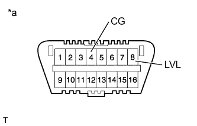
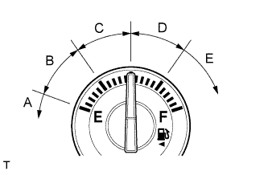

LIGHTING SYSTEM > INITIALIZATION |
| 1.PREPARE VEHICLE FOR INITIALIZATION |
Unload the trunk and vehicle, making sure that the spare tire, tools and jack are in their original positions.
Check that there are no occupants in the vehicle.
Turn the headlights off.
Stop the vehicle on a level surface and keep the vehicle height unchanged.
| |||||
| 2.CHECK AFS OFF INDICATOR LIGHT |
Turn the engine switch on (IG) and check the indicator light.
| Condition | Specified Condition |
| The headlight swivel ECU has been replaced with a new one. | Indicator light continuously blinks 6 times at 2 Hz. |
| Removal and reinstallation of the headlight swivel ECU, replacement of the rear height control sensor sub-assembly RH, removal and reinstallation of the rear height control sensor sub-assembly RH, replacement of the suspension, etc. has been performed. | Indicator light comes on for approximately 3 seconds, and then goes off (bulb check function). |
|
| ||||
| |||||
| 3.INITIALIZATION |
|  |
Connect terminals 4 (CG) and 8 (LVL) of the DLC3 using SST.
| *a | Front view of DLC3 |
|  |
Turn the low beam headlights on and off using the headlight dimmer switch within 20 seconds after connecting the terminals.
| Fuel Level | Number of Times to Turn Low Beam Headlights On and Off |
| Fuel level is within range A | 1 |
| Fuel level is within range B | 2 |
| Fuel level is within range C | 3 |
| Fuel level is within range D | 4 |
| Fuel level is within range E | 5 |
Check the indicator light.
| Condition | Specified Condition |
| The headlight swivel ECU has been replaced with a new one. | Blinks 6 times at 2 Hz → Continuously blinks N* times at 2 Hz. |
| Removal and reinstallation of the headlight swivel ECU, replacement of the rear height control sensor sub-assembly RH, removal and reinstallation of the rear height control sensor sub-assembly RH, replacement of the suspension, etc. has been performed. | Off → Continuously blinks N* times at 2 Hz. |
|
| ||||
|
| ||||
|---|---|---|---|---|---|